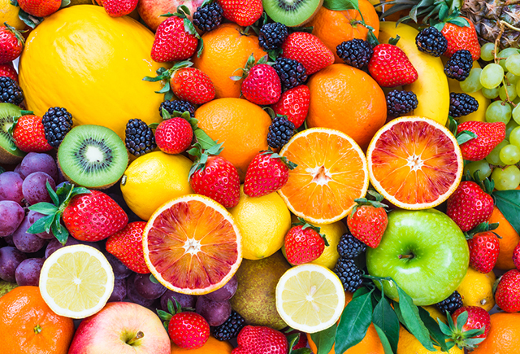
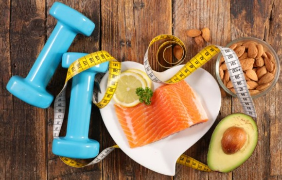

Elas têm vitaminas, minerais e antioxidantes, compostos que protegem as células contra o envelhecimento.

Ser fisicamente ativo pode aumentar sua saúde cerebral,E uma dieta saudável pode aumentar sua longevidade, aumentar a imunidade e diminuir o risco de doenças crônicas.

interfere na digestão, absorção e transporte de nutrientes, filtra as toxinas, facilita o processo de excreção do corpo, auxilia no emagrecimento, combate acnes, celulites e estrias.

prevenir doenças como obesidade e diabetes, diminuir o estresse, proporcionar mais disposição, proteger o organismo e até mesmo aumentar a felicidade.

reduzem o risco de desenvolver diabetes tipo 2, câncer, doenças cardiovasculares e vários outros problemas.

tem bom funcionamento intestinal, níveis controlados de glicemia e colesterol, além de pele, unhas e cabelos mais bonitos e fortalecidos.
a sustentabilidade promove o consumo consciente, incentivando a conservação da biodiversidade, a redução do desperdício e a minimização da poluição.

garantem uma melhor qualidade de vida, podendo prevenir doenças e fortalecer o sistema imunológico.